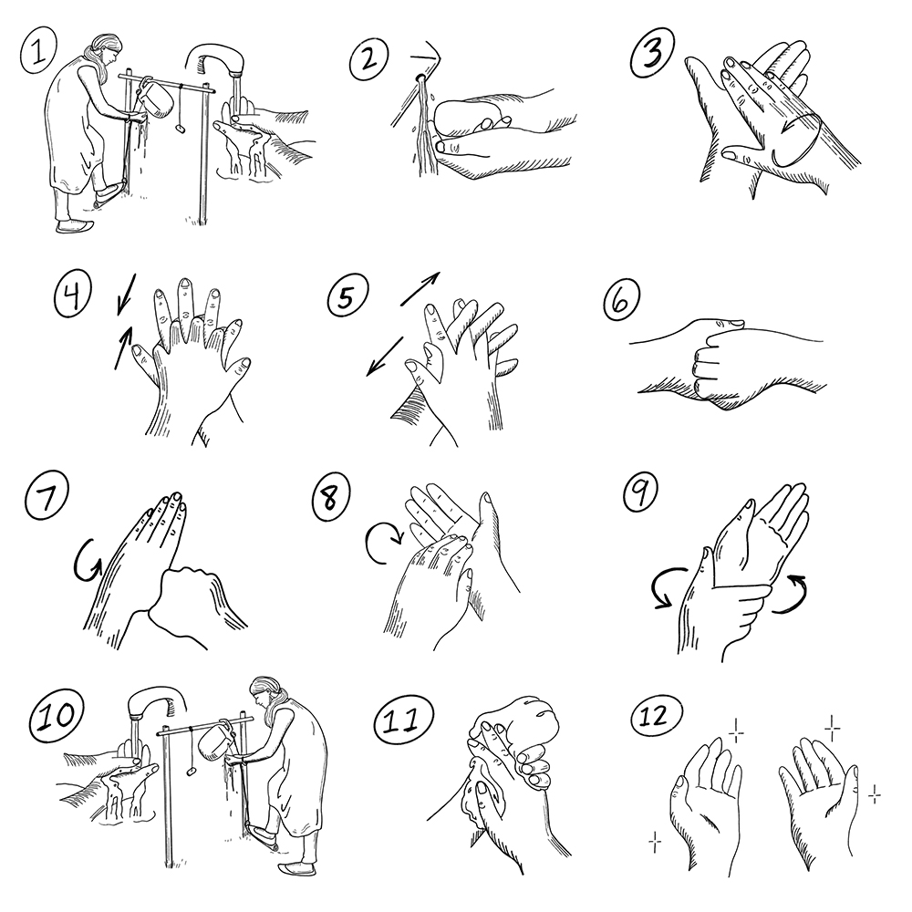

Lavage des mains dans les épidémies de maladies très contagieuses
Aperçu
Si vous n’êtes pas extrêmement prudents, vous risquez de tomber malades en essayant d’aider les gens dans le cadre de certaines épidémies. (Voir les fiches action 5 et 6 sur la protection des volontaires et l’utilisation de l’EPP.)
Le lavage des mains est une mesure de protection fondamentale pendant les épidémies d’Ebola , de fièvre de Marburg , de fièvre de Lassa , de peste , de syndrome respiratoire du Moyen-Orient et de variole du singe </a.
Pourquoi le lavage des mains est-il différent et particulièrement important en cas d’épidémie?
Les germes très contagieux se transmettent très facilement par les liquides corporels ; certaines maladies peuvent même se propager par les corps de personnes décédées.
Dans de tels cas, un lavage des mains très vigoureux et complet est nécessaire.
Lorsqu’on lutte contre ce genre d’épidémies, il est essentiel de se protéger par tous les moyens possibles (voir les fiches action 5 et 6 sur la protection des volontaires et l’utilisation de l’EPP).
Quand vous vous lavez les mains pendant une épidémie, pour éliminer tous les germes qui pourraient se trouver sur vos mains, vous devez:
utiliser du savon ou un désinfectant à base d’alcool;
vous laver les mains comme d’habitude;
ensuite, vous laver soigneusement l’espace entre les doigts;
frotter les bouts des doigts des deux mains les uns contre les autres;
laver chaque pouce avec l’autre main;
frotter le bout de chaque doigt sur la paume de l’autre main.
(Voir les instructions au verso.)
Pendant une épidémie (de maladie très contagieuse ou d’une autre maladie telle que la diarrhée ou le choléra, ou d’une infection respiratoire), cette méthode de lavage des mains est recommandée à chaque fois que vous avez touché un objet susceptible de vous transmettre une infection

Messages communautaires
Voir les messages de la communauté suivants pour soutenir lavage des mains dans les épidémies de maladies très contagieuses: